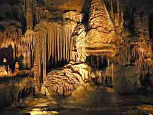

Cave Without a Name
Century Cave - Century Caverns
Useful Information
|  |
|---|
| Image: flowstone formations like canopies and shawls.
Photographer: Knut Brenndörfer |
| Location: | Near Boerne, TX. I 10 to Boerne, in the city center take County Route 474 northeast about 10km, right on Kreutzberg Rd. 8km. (29°52'54.31"N, 98°37'4.58"W) |
| Open: |
Memorial Day - Labor Day daily 9-18. Labor Day - Memorial Day daily 10-17. [2007] |
| Fee: |
Adults USD 14, Children (6-12) USD 7, Children (0-5) free. Groups (12+): Adults USD 12, Children (5-12) USD 6. [2004] |
| Classification: |
 Karst cave,
Cretacious limestone. Karst cave,
Cretacious limestone.
|
| Light: | electric |
| Dimension: | L=4,313m, VR=25m, A=375m asl, T=18°C. |
| Guided tours: | L=400m, VR=25m, ST=126, D=75min. |
| Photography: | |
| Accessibility: | |
| Bibliography: | Brochures available from the Chamber of Commerce, Boerne, TX. |
| Address: |
Cave Without a Name, 325 Kreutzberg Rd., Boerne, TX 78006, Tel: +1-830-537-4212 Manager: Mike Burrell. Owner: Tom Summers. |
| As far as we know this information was accurate when it was published (see years in brackets), but may have changed since then. Please check rates and details directly with the companies in question if you need more recent info. |
|
History
| 1925 | discovered. |
| 1939 | opened to the public. |
| 1974 | intensive cave exploration. |
| 2002 | road to the cave improved. |
Description
 |
| Image: formations called
curtains. Photographer: Knut Brenndörfer |
The Cave Without a Name was named such, because in a local contest in 1939, a little boy remarked that the cave was too beautiful to give it a name. Still, on some road maps it is listed as Century Cave.
As the cave has been reached by a 8km rocky road, the visitation was very poor, although the cave is really beautiful and well worth visiting. A recent improvement of the road made it wide and paved except the last 1,600m. The remaining part will be improved soon.
The cave is well decorated and definitely worth a visit. Many of the formations show an extraordinary bright white. Part of the reason the cave deposits are so translucent is because of the purity of the limestone of which they are formed.
A continuing drought in the San Antonio area until 2002 threatened the cave, according to the owner. But the water situation changed completely in July 2002, when a huge flood took place.

|
| Cave Without a Name Gallery |
 Search Google for "Cave Without a Name"
Search Google for "Cave Without a Name" Google Earth Placemark
Google Earth Placemark Cave Without a Name,
official site.
Cave Without a Name,
official site.{kind=link}
{kind=link}